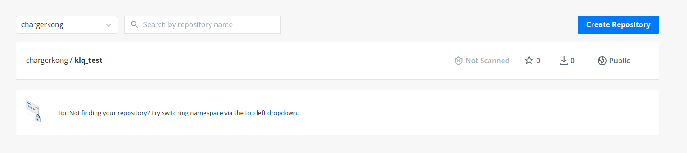

安装与卸载
安装
1 | curl -sSL https://get.daocloud.io/docker | sh |
测试
1 | $ sudo docker run hello-world |
卸载
删除安装包：
1 | sudo apt-get purge docker-ce |
删除镜像、容器、配置文件等内容：
1 | sudo rm -rf /var/lib/docker |
1 | docker pull chargerkong/klq_test:v1.0 |
Hello world
1 | docker run ubuntu:15.10 /bin/echo "Hello world" |
各个参数解析：
- docker: Docker 的二进制执行文件。
- run: 与前面的 docker 组合来运行一个容器。
- ubuntu:15.10 指定要运行的镜像，Docker 首先从本地主机上查找镜像是否存在，如果不存在，Docker 就会从镜像仓库 Docker Hub 下载公共镜像。
- /bin/echo “Hello world”: 在启动的容器里执行的命令
以上命令完整的意思可以解释为：Docker 以 ubuntu15.10 镜像创建一个新容器，然后在容器里执行 bin/echo “Hello world”，然后输出结果。
运行交互式的容器
1 | docker run -i -t ubuntu:15.10 /bin/bash |
进入一个新的shell窗口
各个参数解析：
- -t: 在新容器内指定一个伪终端或终端。
- -i: 允许你对容器内的标准输入 (STDIN) 进行交互。
注意第二行 root@0123ce188bd8:/#，此时我们已进入一个 ubuntu15.10 系统的容器，容器ID为0123ce188bd8
Docker 镜像使用
当运行容器时，使用的镜像如果在本地中不存在，docker 就会自动从 docker 镜像仓库中下载，默认是从 Docker Hub 公共镜像源下载。
镜像就是一个操作系统，我们每一次docker run都会建立一个容器
下面介绍如何发布以及下载docker镜像
建立一个repositories
在Docker Hub中建立仓库，比如名字为klq_test，描述随意写，点击创建


建立自己的镜像
在Docker Hub上有镜像仓库，我们可以基于这些仓库进行继续环境搭建，譬如下载一个ubuntu
1 | docker pull ubuntu:15.10 |
1 | Unable to find image 'ubuntu:15.10' locally |
镜像查看
1 | root@kong-KLV-WX9:# docker images |
这里会显示两个镜像，可以打开任何一个镜像建立容器
更改镜像名字
1 | docker tag ubuntu:15.10 chargerkong/klq_test:v1.0 |
此时再一次查看镜像，会发现多了一个镜像
1 | root@kong-KLV-WX9:/home/kong# docker images |
修改镜像内容
首先进入交互环境
1 | docker run -t -i chargerkong/klq_test:v1.0 /bin/bash |
譬如在/root目录下新建一个文件夹或者文件
1 | touch klq |
Ctrl + D 退出。
注意：此时容器已经关闭，还可以被启动，可以通过docker ps -a进行查看。因此如果再一次使用run命令只会基于镜像再重新开一个容器
查看停止容器
1 | root@kong-KLV-WX9:# docker ps -a |
启动容器
1 | root@kong-KLV-WX9:# docker start b58790faeae8 |
b58790faeae8为容器ID
查看已启动容器
1 | root@kong-KLV-WX9:# docker ps |
进入容器
在使用 -d 参数时，容器启动后会进入后台。此时想要进入容器，可以通过以下指令进入：
- docker attach
- docker exec：推荐大家使用 docker exec 命令，因为退出容器终端，不会导致容器的停止。
1 | root@kong-KLV-WX9:# docker exec -it b58790faeae8 /bin/bash |
这样才可以看见我们之前创建的文件和文件夹
删除容器
1 | docker rm -f 1e560fca3906 |
后面的是容器的ID
提交一个容器更改
1 | docker commit -m="add file" -a="klq" b58790faeae8 chargerkong/klq_test:v2.0 |
在这里-m是注释，-a是作者，b58790faeae8是容器ID，chargerkong/klq_test:v2.0为镜像建立的名字和tag
此时再一次查看镜像，会发现又多了一个镜像名字TAG为v2.0
1 | root@kong-KLV-WX9:/home/kong# docker images |
docker登录
1 | docker login |
开始推送一个镜像
1 | docker push chargerkong/klq_test:v2.0 |
此时，在Docker Hub上对应的库中就会有对应的记录
镜像拉取
在任意一个安装有docker的机器上对镜像进行拉取
1 | docker pull chargerkong/klq_test:v2.0 |
就可以获得最新的镜像内容
镜像删除
1 | docker rmi hello-world |